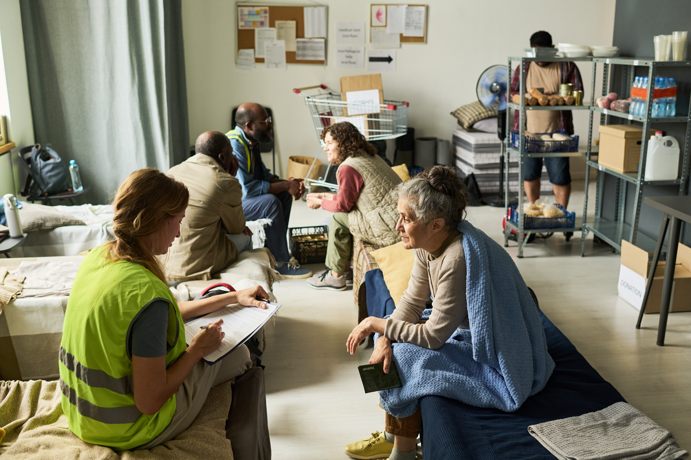
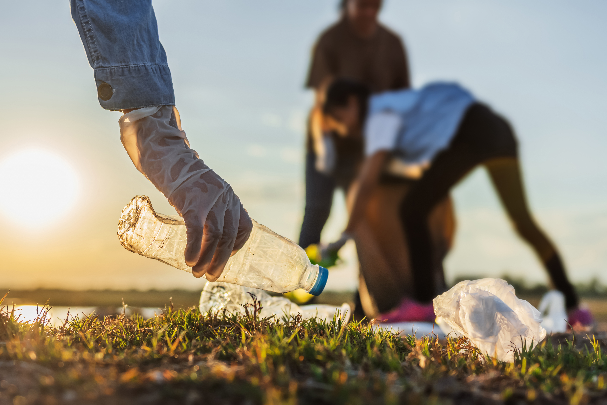

Food Assistance
Find programs offering groceries, meals, and nutrition support.
Learn About Food Assistance
Explore services and programs that can help with everyday needs, employment, housing, food access, family support, and opportunities to get involved.
Find programs offering groceries, meals, and nutrition support.
Learn About Food Assistance

Find information about housing assistance and related services.
Learn About Housing Support
Explore employment, training, and job-search resources.
Learn About Employment Services
Find community programs designed for individuals and families.
Learn About Family Programs

Discover ways to volunteer your time and support programs, events, and services in the community.
Learn About Volunteer Opportunities